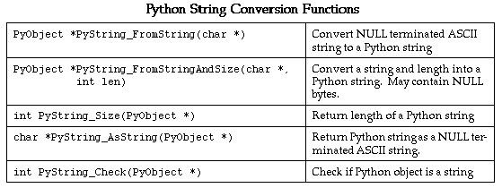
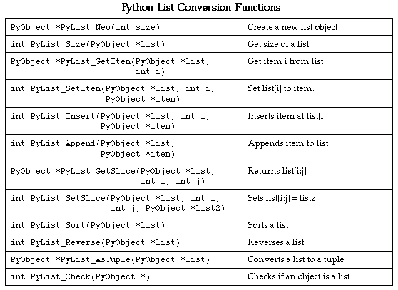
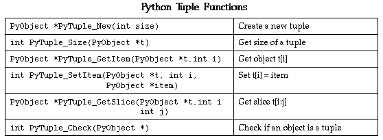
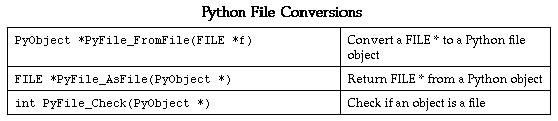

%swig -java -shadow example.i
This will produce 2 files. The file example_wrap.c contains all of the C code needed to build a Java module. To build a Java module, you will need to compile the file example_wrap.c to create a shared library. When shadow classes are enabled, SWIG may also produce many .java files, but this is described later.
swig -java -help
| Java specific options | |
|---|---|
| -jnic | use c syntax for JNI calls (default depends on -c++ flag) |
| -jnicpp | use C++ syntax for JNI calls (default depends on -c++ flag) |
| -module <module> | set name of module |
| -package <java package> | set the name of the package for the generated classes |
| -shadow | generate shadow classes |
| -nofinalize | do not generate finalizer methods in shadow classes |
/usr/java/include /usr/java/include/<operating_system>
The exact location may vary on your machine, but the above locations are typical.
Unfortunately, the process of building a shared object file varies on every single machine so you may need to read up on the man pages for your C compiler and linker.$ swig -java -shadow example.i $ gcc -c example_wrap.c -I/usr/java/include -I/usr/java/include/solaris $ ld -G example_wrap.o -o libexample.so
When building a dynamic module, the name of the output file is important. If the name of your SWIG module is "example", the name of the corresponding object file should be "libexample.so" (or equivalent depending on your machine, see Dynamic Linking Problems for more information). The name of the module is specified using the %module directive or -module command line option.
// main.java
import example;
public class main {
static {
System.loadLibrary("example");
}
public static void main(String argv[]) {
System.out.println(example.fact(4));
}
}
$ javac *.java $ java main 24 $
Now, assuming all went well, SWIG will be automatically invoked when you build your project. When doing a build, any changes made to the interface file will result in SWIG being automatically invoked to produce a new version of the wrapper file. The Java classes that SWIG output should also be compiled into .class files. To run the native code in the DLL (example.dll), make sure that it is in your path then run your java program which uses it, as described in the previous section. If the library fails to load have a look at Dynamic Linking Problems.
# Makefile for building a Java extension
SRCS = example.c
IFILE = example
INTERFACE = $(IFILE).i
WRAPFILE = $(IFILE)_wrap.c
# Location of the Visual C++ tools (32 bit assumed)
TOOLS = c:\msdev
TARGET = example.dll
CC = $(TOOLS)\bin\cl.exe
LINK = $(TOOLS)\bin\link.exe
INCLUDE32 = -I$(TOOLS)\include
MACHINE = IX86
# C Library needed to build a DLL
DLLIBC = msvcrt.lib oldnames.lib
# Windows libraries that are apparently needed
WINLIB = kernel32.lib advapi32.lib user32.lib gdi32.lib comdlg32.lib winspool.lib
# Libraries common to all DLLs
LIBS = $(DLLIBC) $(WINLIB)
# Linker options
LOPT = -debug:full -debugtype:cv /NODEFAULTLIB /RELEASE /NOLOGO \
/MACHINE:$(MACHINE) -entry:_DllMainCRTStartup@12 -dll
# C compiler flags
CFLAGS = /Z7 /Od /c /nologo
JAVA_INCLUDE = -ID:\jdk1.3\include -ID:\jdk1.3\include\win32
java::
swig -java -shadow -o $(WRAPFILE) $(INTERFACE)
$(CC) $(CFLAGS) $(JAVA_INCLUDE) $(SRCS) $(WRAPFILE)
set LIB=$(TOOLS)\lib
$(LINK) $(LOPT) -out:example.dll $(LIBS) example.obj example_wrap.obj
javac *.java
To build the extension, run NMAKE (you may need to run vcvars32 first). This is a pretty simplistic Makefile, but hopefully its enough to get you started.
Will produce the following JNI c function:%module example extern int fact(int n);
JNIEXPORT jint JNICALL Java_example_fact(JNIEnv *jenv, jclass jcls, jint jarg0) {
public class example {
public final static native int fact(int jarg0);
}
System.out.println(example.fact(4));
/* SWIG interface file with global variables */ %module example ... extern int My_variable; ...
Now in Java :
// Print out the value of a c global variable
System.out.println("My Variable = " + example.get_My_variable());
//Set the value of a C global variable
example.set_My_variable(100);
will be wrapped with the following Java:#define ICONST 42 #define FCONST 2.1828 #define CCONST 'x' #define SCONST "Hello World"
public final static int ICONST = 42; public final static double FCONST = 2.1828; public final static String CCONST = "x"; public final static String SCONST = "Hello World";
will produce the following Java function:int* pointer_fn(short* a, int* b, long* c);
Unlike other language modules, no SWIG pointer library exists yet for the Java module. Until this is written it does restrict the functions that can be usefully used from Java. In the above pointer_fn, any long representing a c pointer can be passed to other c functions, but the value cannot be accessed from Java without writing some accessor functions and using them, for example:public final static native long pointer_fn(long jarg0, long jarg1, long jarg2);
/* c accessor function for reading return values that are int pointers */
int getIntValue(int *ptr) {return *ptr;};
int* pointer_fn();
long integerPtr = example.pointer_fn();
System.out.println("return value=" + example.getIntValue(integerPtr));
struct Vector {
double x,y,z;
};
public class example {
public final static native void set_Vector_x(long jarg0, double jarg1);
public final static native double get_Vector_x(long jarg0);
public final static native void set_Vector_y(long jarg0, double jarg1);
public final static native double get_Vector_y(long jarg0);
public final static native void set_Vector_z(long jarg0, double jarg1);
public final static native double get_Vector_z(long jarg0);
}
// v is a long holding the c pointer to a Vector that got created somehow
example.set_Vector_x(v, 7.8);
System.out.println("x=" + example.get_Vector_x(v));
Similar access is provided for unions and the data members of C++ classes.
class List {
public:
List();
~List();
int search(char *item);
void insert(char *item);
void remove(char *item);
char *get(int n);
int length;
static void print(List *l);
};
When wrapped by SWIG, will produce the following JNI c code to access the class (assuming the module is set to 'example'):
where jarg0 is the 'this' pointer in non-static functions. The JNI specification requires a c interface. The following JNI Java functions are also produced for access from Java:JNIEXPORT jlong JNICALL Java_example_new_1List(JNIEnv *jenv, jclass jcls); JNIEXPORT void JNICALL Java_example_delete_1List(JNIEnv *jenv, jclass jcls, jlong jarg0); JNIEXPORT jint JNICALL Java_example_List_1search(JNIEnv *jenv, jclass jcls, jlong jarg0, jstring jarg1); JNIEXPORT void JNICALL Java_example_List_1insert(JNIEnv *jenv, jclass jcls, jlong jarg0, jstring jarg1); JNIEXPORT void JNICALL Java_example_List_1remove(JNIEnv *jenv, jclass jcls, jlong jarg0, jstring jarg1); JNIEXPORT jstring JNICALL Java_example_List_1get(JNIEnv *jenv, jclass jcls, jlong jarg0, jint jarg1); JNIEXPORT void JNICALL Java_example_set_1List_1length(JNIEnv *jenv, jclass jcls, jlong jarg0, jint jarg1); JNIEXPORT jint JNICALL Java_example_get_1List_1length(JNIEnv *jenv, jclass jcls, jlong jarg0); JNIEXPORT void JNICALL Java_example_List_1print(JNIEnv *jenv, jclass jcls, jlong jarg0);
public class example {
public final static native long new_List();
public final static native void delete_List(long jarg0);
public final static native int List_search(long jarg0, String jarg1);
public final static native void List_insert(long jarg0, String jarg1);
public final static native void List_remove(long jarg0, String jarg1);
public final static native String List_get(long jarg0, int jarg1);
public final static native void List_length_set(long jarg0, int jarg1);
public final static native int List_length_get(long jarg0);
public final static native void List_print(long jarg0);
}
When executed might display:long l = example.new_List(); example.List_insert(l,"Ale"); example.List_insert(l,"Stout"); example.List_insert(l,"Lager"); example.List_print(l); int len = example.get_List_length(l); System.out.println(len);
public class List {
protected long _cPtr;
protected boolean _cMemOwn;
public long getCPtr() {
return _cPtr;
}
public List() {
_cPtr = example.new_List();
_cMemOwn = true;
}
protected void finalize() {
_delete();
}
public void _delete() {
if(_cPtr!=0 && _cMemOwn) {
example.delete_List(_cPtr);
_cPtr = 0;
}
}
public int search(String item) {
return example.List_search(_cPtr, item);
}
public void insert(String item) {
example.List_insert(_cPtr, item);
}
public void remove(String item) {
example.List_remove(_cPtr, item);
}
public String get(int n) {
return example.List_get(_cPtr, n);
}
public void setLength(int value) {
example.set_List_length(_cPtr, value);
}
public int getLength() {
return example.get_List_length(_cPtr);
}
public static void print(List l) {
example.List_print(l.getCPtr());
}
}
List l = new List();
l.insert("Ale");
l.insert("Stout");
l.insert("Lager");
List.print(l);
int len = l.getLength();
System.out.println(len);
By writing shadow classes in Java instead of C, the classes become real Java classes that can be used as base-classes in an inheritance hierarchy or for other applications. Writing the shadow classes in Java also greatly simplies coding complexity as writing in Java is much easier than trying to accomplish the same thing in C. Finally, by writing shadow classes in Java, they are easy to modify and can be changed without ever recompiling any of the C code. The downside to using shadow classes over the simple interface is a slight performance degradation--a concern for some users.
This will create the following files:swig -java -shadow interface.i
The file interface_wrap.c contains the normal SWIG C JNI wrappers. The file interface.java contains the Java code corresponding to the Java native functions. The name of this file will be the same as specified by the %module directive in the SWIG interface file. These two files are produced whether or not the -shadow option is passed to SWIG. There will then be a .java file for each shadow class when -shadow is used. Note that if -c++ is passed to SWIG for wrapping C++ code, then a interface_wrap.cxx file replaces the interface_wrap.c file.interface_wrap.c interface.java plus other .java files corresponding to each shadow class
class RangeError {}; // Used for an exception
class DoubleArray {
private:
int n;
double *ptr;
public:
// Create a new array of fixed size
DoubleArray(int size) {
ptr = new double[size];
n = size;
}
// Destroy an array
~DoubleArray() {
delete ptr;
}
// Return the length of the array
int length() {
return n;
}
// Get an item from the array and perform bounds checking.
double getitem(int i) {
if ((i >= 0) && (i < n))
return ptr[i];
else
throw RangeError();
}
// Set an item in the array and perform bounds checking.
void setitem(int i, double val) {
if ((i >= 0) && (i < n))
ptr[i] = val;
else {
throw RangeError();
}
}
};
The functions associated with this class can throw a C++ range exception for an out-of-bounds array access. We can catch the C++ exception and rethrow it as a Java exception by specifying the following in an interface file :
// Exception handler (intended for JNI calls that have a non void return)
%except(java) {
try {
$function
}
catch (RangeError) {
jclass clazz = jenv->FindClass("java/lang/Exception");
jenv->ThrowNew(clazz, "Range error");
return NULL;
}
}
// This overrides anything in the %except(java) typemap
// Used for JNI calls that return void
%typemap(java,except) void {
try {
$function
}
catch (RangeError) {
jclass clazz = jenv->FindClass("java/lang/Exception");
jenv->ThrowNew(clazz, "Range error");
return;
}
}
When the C++ class throws a RangeError exception, our wrapper functions will catch it, turn it into a Java exception, and allow a graceful death as opposed to having some sort of mysterious JVM crash. Since SWIG's exception handling is user-definable, we are not limited to C++ exception handling. Please see the chapter on exception handling for more details and using the exception.i library for writing language-independent exception handlers.
If we use the following code:
Something similar to the following will be output when it is run:final int SIZE=5; DoubleArray arr = new DoubleArray(SIZE); for (int i=0; i<SIZE; i++) arr.setitem(i, (double)i); for (int i=0; i<SIZE+1; i++) //Note the array over bounds System.out.println(i + " " + arr.getitem(i));
0 0.0
1 1.0
2 2.0
3 3.0
4 4.0
Exception in thread "main" java.lang.Exception: Range error
at example.DoubleArray_getitem(Native Method)
at example.DoubleArray_getitem(Compiled Code)
at DoubleArray.getitem(Compiled Code)
at main.main(Compiled Code)
%module example
%typemap(java,in) int {
$target = (int) PyLong_AsLong($source);
printf("Received an integer : %d\n",$target);
}
extern int fact(int n);
Typemaps require a language name, method name, datatype, and conversion code. For Java, "java" should be used as the language name. The "in" method in this example refers to an input argument of a function. The datatype `int' tells SWIG that we are remapping integers. The supplied code is used to convert from a PyObject * to the corresponding C datatype. Within the supporting C code, the variable $source contains the source data (the PyObject in this case) and $target contains the destination of a conversion.
When this example is compiled into a Java module, it will operate as follows :
>>> from example import * >>> fact(6) Received an integer : 6 720
A full discussion of typemaps can be found in the main SWIG users reference. We will primarily be concerned with Java typemaps here.
%typemap(java,in) Converts Java objects to input function arguments
%typemap(java,out) Converts return value of a C function to a Java object
%typemap(java,varin) Assigns a global variable from a Java object
%typemap(java,varout) Returns a global variable as a Java object
%typemap(java,freearg) Cleans up a function argument (if necessary)
%typemap(java,argout) Output argument processing
%typemap(java,ret) Cleanup of function return values
%typemap(java,const) Creation of Java constants
%typemap(memberin) Setting of C++ member data
%typemap(memberout) Return of C++ member data
%typemap(java,check) Checks function input values.
$source Source value of a conversion
$target Target of conversion (where the result should be stored)
$type C datatype being remapped
$mangle Mangled version of data (used for pointer type-checking)
$value Value of a constant (const typemap only)
%module foo
// This typemap will be applied to all char ** function arguments
%typemap(java,in) char ** { ... }
// This typemap is applied only to char ** arguments named `argv'
%typemap(java,in) char **argv { ... }
Due to the name-based nature of typemaps, it is important to note that typemaps are independent of typedef declarations. For example :
%typemap(java, in) double {
... get a double ...
}
void foo(double); // Uses the above typemap
typedef double Real;
void bar(Real); // Does not use the above typemap (double != Real)
%typemap(java,in) double {
... get a double ...
}
void foo(double);
typedef double Real; // Uses typemap
%apply double { Real }; // Applies all "double" typemaps to Real.
void bar(Real); // Now uses the same typemap.
%module argv
// This tells SWIG to treat char ** as a special case
%typemap(java,in) char ** {
/* Check if is a list */
if (PyList_Check($source)) {
int size = PyList_Size($source);
int i = 0;
$target = (char **) malloc((size+1)*sizeof(char *));
for (i = 0; i < size; i++) {
PyObject *o = PyList_GetItem($source,i);
if (PyString_Check(o))
$target[i] = PyString_AsString(PyList_GetItem($source,i));
else {
PyErr_SetString(PyExc_TypeError,"list must contain strings");
free($target);
return NULL;
}
}
$target[i] = 0;
} else {
PyErr_SetString(PyExc_TypeError,"not a list");
return NULL;
}
}
// This cleans up the char ** array we malloc'd before the function call
%typemap(java,freearg) char ** {
free((char *) $source);
}
// This allows a C function to return a char ** as a Java list
%typemap(java,out) char ** {
int len,i;
len = 0;
while ($source[len]) len++;
$target = PyList_New(len);
for (i = 0; i < len; i++) {
PyList_SetItem($target,i,PyString_FromString($source[i]));
}
}
// Now a few test functions
%inline %{
int print_args(char **argv) {
int i = 0;
while (argv[i]) {
printf("argv[%d] = %s\n", i,argv[i]);
i++;
}
return i;
}
// Returns a char ** list
char **get_args() {
static char *values[] = { "Dave", "Mike", "Susan", "John", "Michelle", 0};
return &values[0];
}
%}
Our type-mapping makes the Java interface to these functions more natural and easy to use.>>> from argv import * >>> print_args(["Dave","Mike","Mary","Jane","John"]) argv[0] = Dave argv[1] = Mike argv[2] = Mary argv[3] = Jane argv[4] = John 5 >>> get_args() [`Dave', `Mike', `Susan', `John', `Michelle'] >>>
// Type mapping for grabbing a FILE * from Java
%typemap(java,in) FILE * {
if (!PyFile_Check($source)) {
PyErr_SetString(PyExc_TypeError, "Need a file!");
return NULL;
}
$target = PyFile_AsFile($source);
}
Now, we can rewrite one of our earlier examples like this :
# Simple gd program
from gd import *
im = gdImageCreate(64,64)
black = gdImageColorAllocate(im,0,0,0)
white = gdImageColorAllocate(im,255,255,255)
gdImageLine(im,0,0,63,63,white)
f = open("test.gif","w") # Create a Java file object
gdImageGif(im,f) # Pass to a C function as FILE *
f.close()
gdImageDestroy(im)
/* Returns a status value and two values in out1 and out2 */
int spam(double a, double b, double *out1, double *out2) {
... Do a bunch of stuff ...
*out1 = result1;
*out2 = result2;
return status;
};
%module outarg
// This tells SWIG to treat an double * argument with name 'OutValue' as
// an output value. We'll append the value to the current result which
// is guaranteed to be a List object by SWIG.
%typemap(java,argout) double *OutValue {
PyObject *o;
o = PyFloat_FromDouble(*$source);
if ((!$target) || ($target == Py_None)) {
$target = o;
} else {
if (!PyList_Check($target)) {
PyObject *o2 = $target;
$target = PyList_New(0);
PyList_Append($target,o2);
Py_XDECREF(o2);
}
PyList_Append($target,o);
Py_XDECREF(o);
}
}
int spam(double a, double b, double *OutValue, double *OutValue);
%typemap(java,ignore) double *OutValue(double temp) {
$target = &temp; /* Assign the pointer to a local variable */
}
>>> a = spam(4,5) >>> print a [0, 2.45, 5.0] >>>
extern void set_direction(double a[4]); // Set direction vector
This too, can be handled used typemaps as follows :
// Grab a 4 element array as a Java 4-tuple
%typemap(java,in) double[4](double temp[4]) { // temp[4] becomes a local variable
int i;
if (PyTuple_Check($source)) {
if (!PyArg_ParseTuple($source,"dddd",temp,temp+1,temp+2,temp+3)) {
PyErr_SetString(PyExc_TypeError,"tuple must have 4 elements");
return NULL;
}
$target = &temp[0];
} else {
PyErr_SetString(PyExc_TypeError,"expected a tuple.");
return NULL;
}
}
Since our mapping copies the contents of a Java tuple into a C array, such an approach would not be recommended for huge arrays, but for small structures, this kind of scheme works fine.>>> set_direction((0.5,0.0,1.0,-0.25))
#define NAMELEN 32
typedef struct {
char name[NAMELEN];
...
} Person;
%typemap(memberin) char[NAMELEN] {
/* Copy at most NAMELEN characters into $target */
strncpy($target,$source,NAMELEN);
}
It should be noted that the [NAMELEN] array size is attached to the typemap. A datatype involving some other kind of array would not be affected. However, you can write a typemap to match any sized array using the ANY keyword as follows :
%typemap(memberin) char [ANY] {
strncpy($target,$source,$dim0);
}
During code generation, $dim0 will be filled in with the real array dimension.


These functions can be used in typemaps. For example, the following typemap makes an argument of "char *buffer" accept a pointer instead of a NULL-terminated ASCII string.
%typemap(java,in) char *buffer {
PyObject *o;
char *str;
if (!PyString_Check(o)) {
PyErr_SetString(PyExc_TypeError,"not a string");
return NULL;
}
str = PyString_AsString(o);
if (SWIG_GetPtr(str, (void **) &$target, "$mangle")) {
PyErr_SetString(PyExc_TypeError,"not a pointer");
return NULL;
}
}
By now you hopefully have the idea that typemaps are a powerful mechanism for building more specialized applications. While writing typemaps can be technical, many have already been written for you. See the Typemaps chapter for more information about using library files.
| c type | Java type | JNI type |
| char | byte | jbyte |
| unsigned char | short | jshort |
| short | short | jshort |
| unsigned short | int | jint |
| int | int | jint |
| unsigned int | long | jlong |
| long | long | jlong |
| long | long | jlong |
| float | float | jfloat |
| double | double | jdouble |
| bool | int | jint |
| void | void | void |
The non shadow access from Java is shown below, where the first parameter, ptr, is a long containing the pointer to an object of type AClass:void AClass::func(int a, int* b, SomeClass c, SomeClass* d, SomeClass& e, SomeClass f[10]);
The Java shadow class, AClass, will contain the following function:public final static native void AClass_func(long ptr, int a, long b, long c, long d, long e, long[] f);
public void func(int a, long b, SomeClass c, SomeClass d, SomeClass e, SomeClass f[]) {...}
Also note that SWIG converts C/C++ enums into integers.
The following typemaps are supported.
| typemap | description |
| typemap(java,in) | Converts function arguments from the java representation to a C representation. |
| typemap(java,argout) | Return values through function arguments |
| typemap(java,out) | Converts the result of a C function to a java representation. |
| typemap(java,jtype) | Override the default mapping of basic types from C to Java. Always provide jni, in, argout and out typemaps if you use this typemap. |
| typemap(java,jni) | Override the default mapping of basic types from C to jni. Always provide jtype, in, argout and out typemaps if you use this typemap. |
The following typemaps are predefined, but user defined typemaps can
be included in the interface file.
| C Type | Typemap | Kind | Java Type | Function |
| char * | STRING | input
output return |
String | \0 terminated string
Java string is converted to c string, which is released afterwards |
| BYTE | input
output |
byte[] | Java byte array is converted to char array which is release afterwards | |
| char ** | STRING_IN | input | String[] | \0 terminated array of \0 terminated strings
the array is malloc-ed and released afterwards |
| STRING_OUT | output | String[] | &char*
the argument is the address of an '\0' terminated string |
|
| STRING_RET | return | String[] | \0 terminated array of \0 terminated strings
the array is not free-ed. |
|
| int * | INT_OUT | output | int[] | &int
value is returned in an int, which is stored in the Java int[0] |
/* TestStruct.i */
#ifdef SWIG
%pragma(java) modulecode="/*This code gets added to the module class*/"
%pragma(java) allshadowcode="/*This code gets added to every shadow class*/"
#endif
typedef struct TestStruct {
#ifdef SWIG
%pragma(java) shadowcode="/*This code gets added to the TestStruct shadow class only*/"
#endif
int myInt;
} TestStruct;
| Pragma | Description | Example |
| modulebase | Specifies a base class for the Java module class. | %pragma(java) modulebase="BaseClass" |
| shadowbase | Specifies a base class for the Java shadow class. | %pragma(java) shadowbase="BaseClass" |
| allshadowbase | Specifies a base class for all Java shadow classes. | %pragma(java) allshadowbase="BaseClass" |
| modulecode | Adds code to the Java module class. | %pragma(java) modulecode="/*module code*/" |
| shadowcode | Adds code to the Java shadow class. | %pragma(java) shadowcode="/*shadow code*/" |
| allshadowcode | Adds code to all Java classes. | %pragma(java) allshadowcode="/*all shadow code*/" |
| moduleclassmodifiers | Overrides the default Java module class modifiers. The default is public. | %pragma(java) moduleclassmodifiers="public final" |
| shadowclassmodifiers | Overrides the default Java shadow class modifiers. The default is public. Also overrides allshadowclassmodifiers if present. | %pragma(java) shadowclassmodifiers="public final" |
| allshadowclassmodifiers | Overrides the default modifiers for all Java classes. The default is public. | %pragma(java) allshadowclassmodifiers="public final" |
| moduleimport | Adds an import statement to the Java module class file. | %pragma(java) moduleimport="java.lang.*" |
| shadowimport | Adds an import statement to the Java shadow class file. Adds to any imports specified in allshadowimport. | %pragma(java) shadowimport="java.lang.*" |
| allshadowimport | Adds an import statement to all Java shadow class files. | %pragma(java) allshadowimport="java.lang.*" |
| moduleinterface | Specifies an interface which the Java module output class implements. Can be used multiple times as Java supports multiple interfaces. | %pragma(java) moduleinterface="SomeInterface" |
| shadowinterface | Specifies an interface which the Java shadow class implements. Can be used multiple times as Java supports multiple interfaces. Adds to any interfaces specified in allshadowinterface. | %pragma(java) shadowinterface="SomeInterface" |
| allshadowinterface | Specifies an interface which all Java shadow classes implement. Can be used multiple times as Java supports multiple interfaces. | %pragma(java) allshadowinterface="SomeInterface" |
| modulemethodmodifiers | Overrides the native default method modifiers for the module class. The default is public final static. | %pragma(java) modulemethodmodifiers="protected final static synchronized" |
_delete() and finalize() methods. The finalize() method calls _delete() which frees any SWIG malloced c memory for wrapped structs or deletes any SWIG wrapped classes created on the heap, which in turn calls the class' destructor. The idea is for _delete() to be called when you have finished with the C/C++ object. Ideally you need not call _delete(), but rather leave it to the garbage collector to call it from the finalizer. The unfortunate thing is that Sun, in their wisdom, do not guarantee that the finalizers will be called. When a program exits, the garbage collector does not always call the finalizers. Depending on what the finalizers do and which operating system you use, this may or may not be a problem.
_delete() call into JNI code is just for memory handling, there is not a problem when run on Windows and Unix. Say your JNI code creates memory on the heap which your finalizers will clean up, the finalizers may or may not be called before the program exits. In Windows and Unix all memory that a process uses is returned to the system, so this isn't a problem. This is not the case in some operating systems like vxWorks. If however, your finalizers call into JNI code invokes a C++ destructor which in turn releases a socket for example, there is no guarantee that it will be released. Note that the garbage collector will eventually run, so long running programs will have their finalizers called periodically.
System.runFinalizersOnExit(true) or Runtime.getRuntime().runFinalizersOnExit(true) to ensure the finalizers are called before the program exits. The catch is that this is a deprecated function call as the documenation says:
This method is inherently unsafe. It may result in finalizers being called on live objects while other threads are concurrently manipulating those objects, resulting in erratic behavior or deadlock.In many cases you will be lucky and find that it works, but it is not to be advocated. Have a look at Sun's Java web site and search for
runFinalizersOnExit.
addShutdownHook(), was introduced which is guaranteed to be called when your program exits. You can encourage the garbage collector to call the finalizers, for example, add this static block to the class that has the main() function:
static {
Runtime.getRuntime().addShutdownHook(
new Thread() {
public void run() { System.gc(); System.runFinalization(); }
}
);
}
runFinalization() will actually call the finalizers. As the the shutdown hook is guaranteed you could also make a JNI call to clean up any resources that are being tracked in the C/C++ code.
_delete() function manually. As a suggestion it may be a good idea to set the object to null so that should the object be inadvertantly used again a Java null pointer exception is thrown, the alternative would crash the JVM by using a null c pointer. For example given a SWIG generated class A:
The SWIG generated code ensures that the memory is not deleted twice, in the event the finalizers get called in addition to the manualA myA = new A(); // use myA ... myA._delete(); // any use of myA here would crash the JVM myA=null; // any use of myA here would cause a java null pointer exception to be thrown
_delete() call.
System.loadLibrary("name"). This can fail and it can be due to a number of reasons.
loadLibrary function. The text passed to the loadLibrary function must not include the the extension name in the text, that is .dll or .so. The text must be name and not libname for all platforms. On Windows the native library must then be called name.dll and on Unix it must be called libname.so. If you are debugging using java -debug, then the native library must be called name_g.dll on Windows and libname_g.so on Unix.
%name(JPasswd) struct passwd {
....
};
return NULL is often used. As some JNI function return types are void, a return is needed instead of a return NULL. This can be solved by using %typemap(java, except) which will use the return type as the basis for overriding the %except directive.